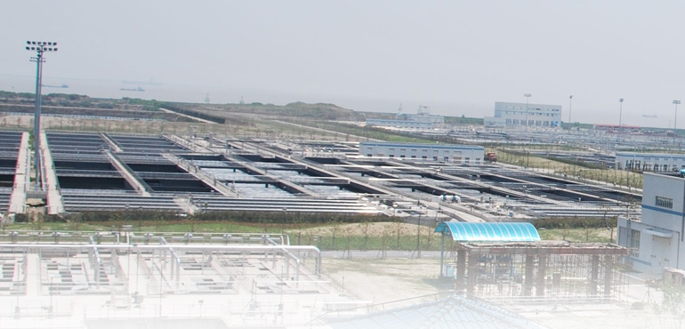
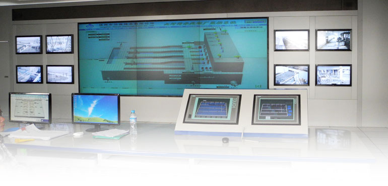

一家专注于高效、有效污水处理的控制公司——超越机械层面，专注于处理的生物方面，同时考虑所有固有的复杂性。
BioChem 是一家专注于高效、有效污水处理的控制公司。我们超越机械层面，专注于处理的生物方面，同时考虑所有固有的复杂性。
我们提供高度自动化、复杂但用户友好的控制策略，以实现无与伦比的性能水平、精确控制、能源效率和运营安心。
BioChem Technology, Inc.（BCT）于1977年在费城成立，是污水处理生物工艺优化和曝气控制领域的先驱。2022年，GL-Turbo 收购了 BCT 的全部资产，包括其知识产权和客户关系，并继续开发和支持 BCT 业界领先的 BACS 和 BIOS 技术。

通过运用多学科科学知识和先进数据解决方案，为复杂过程开发和部署高价值的智能控制解决方案。
利用变革性的智能控制解决方案，为所有大小水务公用事业单位——无论新旧——提供高经济价值的环境管理。

BioChem 的所有研究与开发、应用工程、建模和编程均在内部完成。制造和组装在我们自己的车间或经 UL™ 认证的车间进行。
除核心产品外，我们的工程团队还提供一系列咨询和技术服务。
二级处理工艺设计及独立第三方设计审查。
针对生物工艺异常、出水水质问题和运营挑战进行精准诊断。
使用 BioWin 和 GPS-X 进行生物工艺建模与模拟。